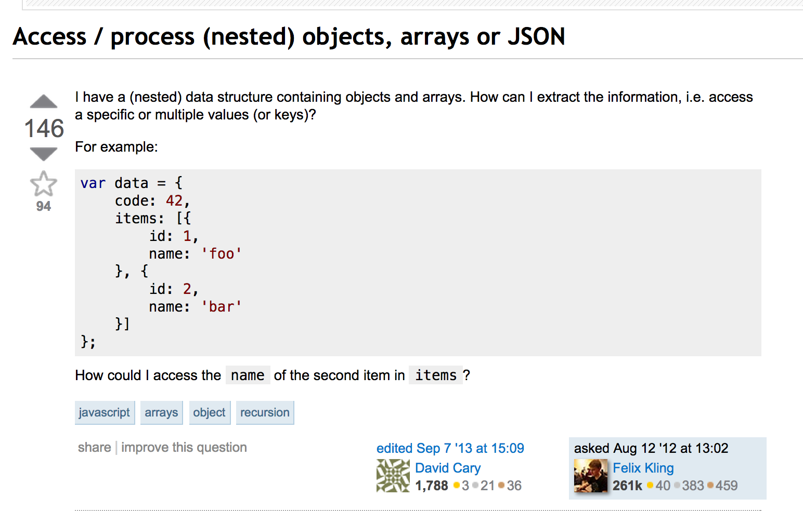

Use the KISS method. Keep it short and simple. Treat others as you would like to be treated. Those are traditional sayings in life that are also applicable in the business world. Asking questions is definitely a part of that. You do not want to bog down your helper with unnecessary details. It should get down right to the point but also be clear enough so that he/she can help you with it. Obviously you do not want to be rude in your questions and should not take any of the answers/suggestions personally. People are spending their free time to share their knowledge.
Here is an example of a great question posted on Stack Overflow about nested objects in JavaScript.
I am going to list all of the qualities on why I think this is a great question:
- Clean, descriptive title (gets right to the point)
- Just two lines, where the question is summarized right away: "how do I access a specific or multiple values(or keys)"
- The code example is great because it shows a clear example of what the question is
- Asks a specific question of accessing a specific nested key, value: e.g. how to access the
nameof the second item initems - The question is formatted with code so the readers know exactly what
nameanditemsmean. There is no second guessing or any assumption here.
This question and the accompanying answers helped me a lot in understanding nested data in javascript. The user can read the title, the description, or the actual question and still have enough info to answer the question. The code example and formatting is super helpful and that is one of the biggest pluses to asking questions on a Forum. Use specific code examples on what is troubling you. Do not assume anything. Give the readers specific details and try not to use abbreviations. For the KISS method, I try and think as if I'm googling a question. It should be around 1 sentence with enough details where a search engine can parse and understand. And lastly, don't be afraid to ask questions if you don't understand, or if you still need clarifications. The only dumb question is the silent one that was never asked.